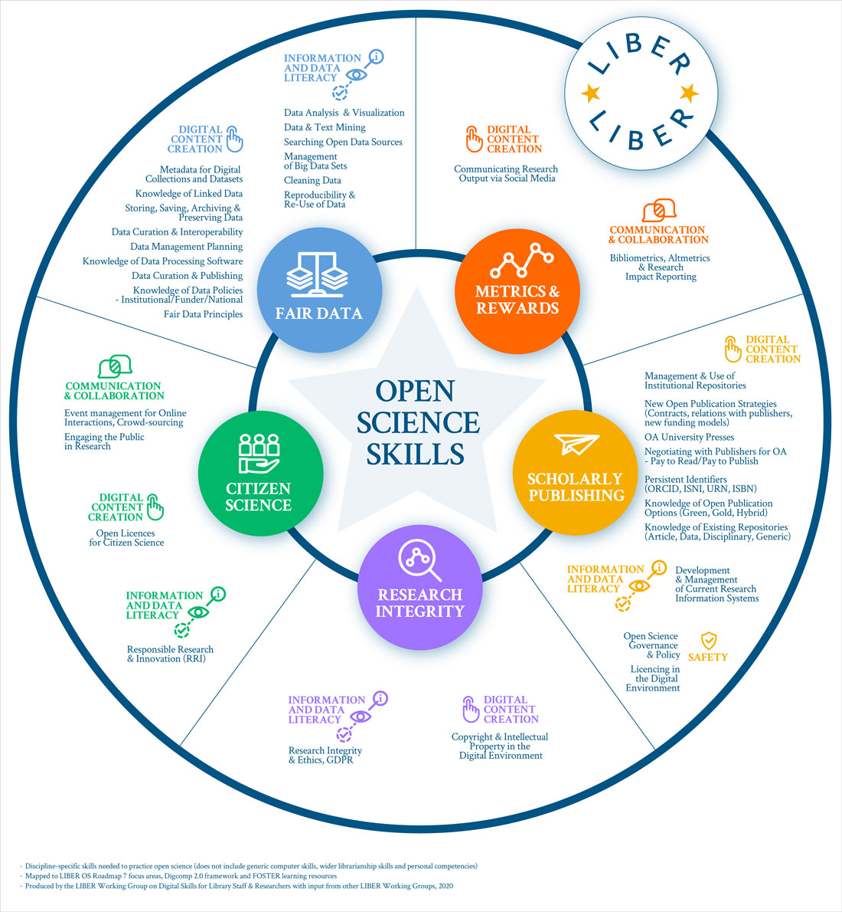
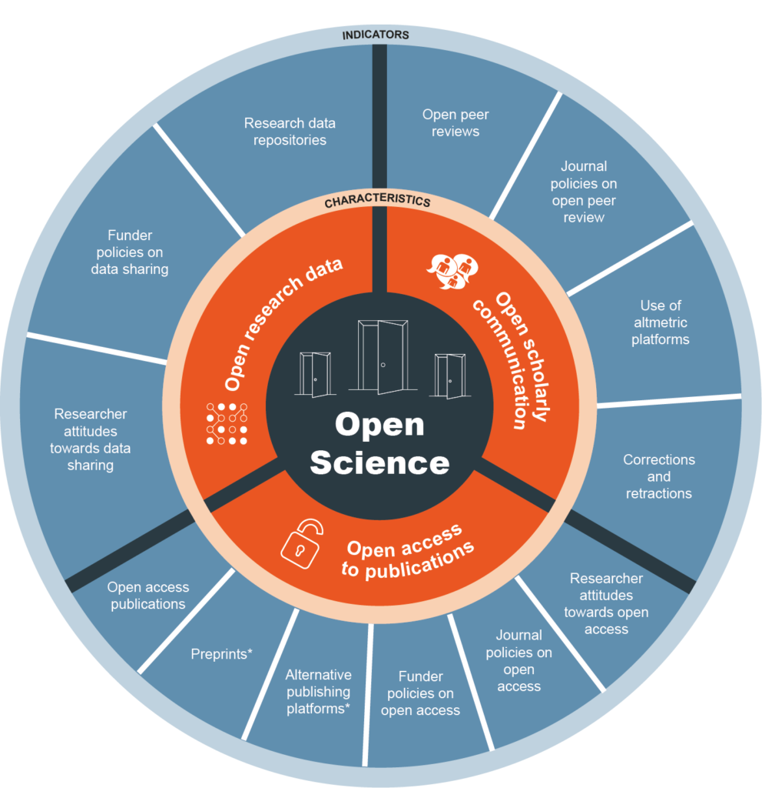
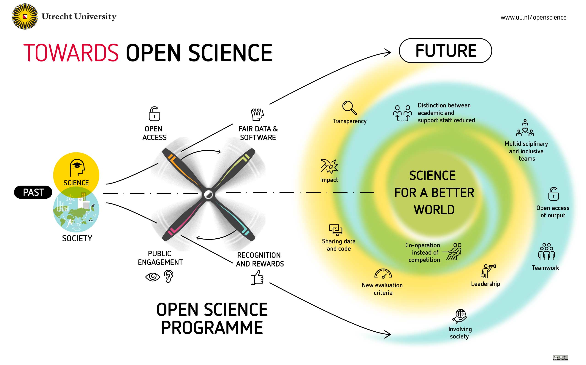
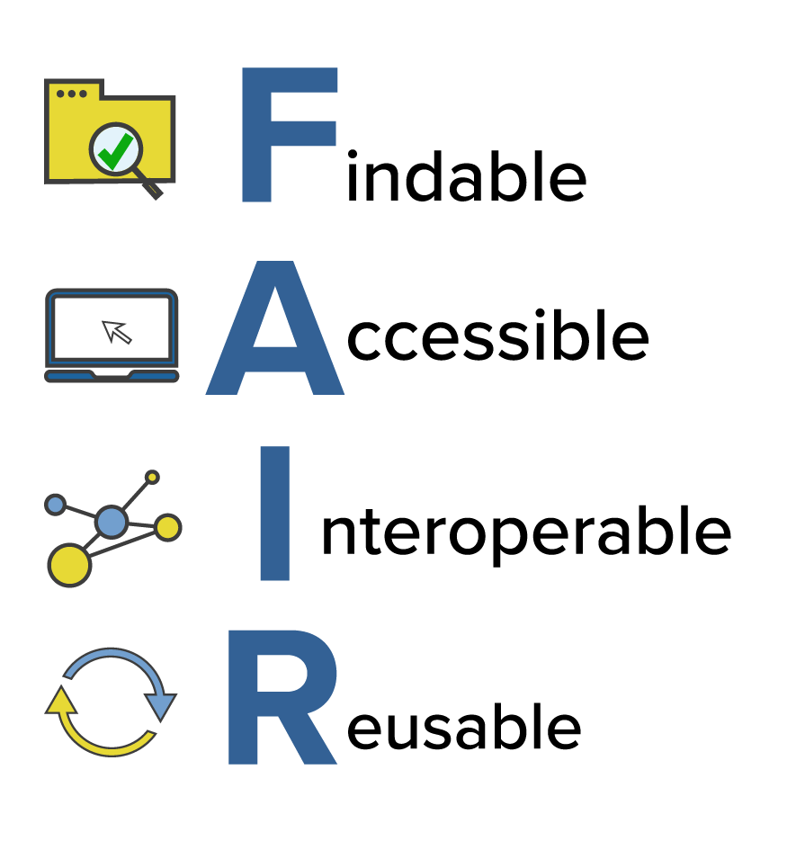
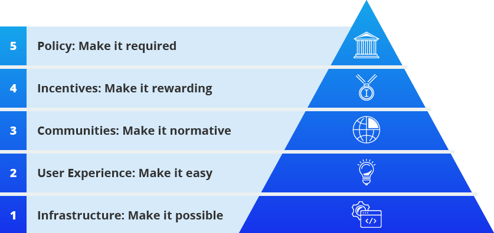

Papercheck
https://scienceverse.github.io/talks/2025-fdsai-ethics/
Abstract
Papercheck is a tool that leverages text search, code, and large language models to extract and supplement information from scientific documents (including manuscripts, submitted or published articles, or preregistration documents) and provides automated suggestions for improvement.
Inspired by practices in software development, where automated checks (e.g., CRAN checks for R packages) are used to identify issues before release, Papercheck aims to screen scientific manuscripts to identify potential issues or areas for improvement and guide researchers in adopting best practices. It can also assist with processing large numbers of papers for metascientific enquiry.
The Problem
Best Practices are Rapidly Evolving





Un-FAIR Meta-Data

- All research outputs should be FAIR
- PDFs are where data goes to die
- Meta-data use cases:
- facilitating meta-analyses
- improving the re-use of reliable measures
- meta-scientific research
Solutions
Checklists?


Automated Checks
- Time-efficient
- Requires less expertise
- Reproducible
- Generates machine-readable metadata
Automation Strategies
Grobid: A machine learning software for extracting structured information from scholarly documents
And then…
R Package
Text Search
| text | section | header | div | p | s | id |
|---|---|---|---|---|---|---|
| The monetary value of X ranged from (Canadian) $2 to $5 and was balanced between self and non-self morph trials. | intro | INTRODUCTION | 1 | 4 | 5 | debruine-fret |
| In the pay-off structure of the current game, the expected effect of such an evolved psychology would be both to raise the incentive to trust from (Canadian) $1 to $(1 ϩ r) and to lower the cost of betrayal from $1 to $(1 Ϫ r). | intro | INTRODUCTION | 1 | 6 | 2 | debruine-fret |
Regex Text Search
| text | section | header | div | p | s | id |
|---|---|---|---|---|---|---|
| age = 19 | method | Participants | 5 | 1 | 1 | debruine-child |
| age = 19 | method | Participants | 5 | 2 | 1 | debruine-child |
| M = 5.6 | method | Participants | 5 | 2 | 3 | debruine-child |
| SD = 2.3). | method | Participants | 5 | 2 | 3 | debruine-child |
| F(1,51) = 7.24 | results | Hypothetical investment decisions | 11 | 2 | 1 | debruine-child |
| P = .01 | results | Hypothetical investment decisions | 11 | 2 | 1 | debruine-child |
| F(1,51) = 0.52 | results | Hypothetical investment decisions | 11 | 2 | 1 | debruine-child |
| P = .48 | results | Hypothetical investment decisions | 11 | 2 | 1 | debruine-child |
| M = 1.26 | results | Hypothetical investment decisions | 11 | 2 | 1 | debruine-child |
| SD = 1.25 | results | Hypothetical investment decisions | 11 | 2 | 1 | debruine-child |
LLM
query <- 'How many subjects were in the studies in total?
Return your answer in JSON format giving the total and
any subgroupings by gender, e.g.:
{"total": 100, men": 42, "women": 58},
Only return valid JSON, no notes.'
llm_subjects <- papers |>
search_text("\\d+", section = "method") |>
search_text(return = "section") |>
llm(query)
llm_subjects |> json_expand()| id | answer | total | men | women |
|---|---|---|---|---|
| debruine-child | {“total”: 71, “men”: 32, “women”: 39} | 71 | 32 | 39 |
| debruine-fret | {“total”: 48, “men”: 24, “women”: 24} | 48 | 24 | 24 |
| debruine-sex | {“total”: 136, “men”: 86, “women”: 50} | 136 | 86 | 50 |
| debruine-tnl | {“total”: 144, “men”: 66, “women”: 78} | 144 | 66 | 78 |
LLM Models
| id | owned_by | created | context_window | |
|---|---|---|---|---|
| 1 | meta-llama/llama-4-scout-17b-16e-instruct | Meta | 2025-04-05 | 131072 |
| 3 | llama-3.1-8b-instant | Meta | 2023-09-03 | 131072 |
| 4 | meta-llama/llama-prompt-guard-2-22m | Meta | 2025-05-30 | 512 |
| 5 | meta-llama/llama-4-maverick-17b-128e-instruct | Meta | 2025-04-05 | 131072 |
| 6 | meta-llama/llama-prompt-guard-2-86m | Meta | 2025-05-30 | 512 |
| 7 | meta-llama/llama-guard-4-12b | Meta | 2025-05-08 | 131072 |
| 9 | llama-3.3-70b-versatile | Meta | 2024-12-06 | 131072 |
| 10 | qwen/qwen3-32b | Alibaba Cloud | 2025-05-28 | 131072 |
| 11 | moonshotai/kimi-k2-instruct | Moonshot AI | 2025-07-13 | 131072 |
| 12 | openai/gpt-oss-20b | OpenAI | 2025-08-05 | 131072 |
| 13 | playai-tts-arabic | PlayAI | 2025-02-27 | 8192 |
| 14 | groq/compound-mini | Groq | 2025-09-04 | 131072 |
| 15 | playai-tts | PlayAI | 2025-02-27 | 8192 |
| 16 | openai/gpt-oss-120b | OpenAI | 2025-08-05 | 131072 |
| 17 | allam-2-7b | SDAIA | 2025-01-23 | 4096 |
| 18 | moonshotai/kimi-k2-instruct-0905 | Moonshot AI | 2025-09-05 | 262144 |
| 19 | groq/compound | Groq | 2025-09-04 | 131072 |
Modules
* all_p_values: List all p-values in the text, returning the matched text (e.g., 'p = 0.04') and document location in a table.
* all_urls: List all the URLs in the main text.
* aspredicted: Get data from AdPredicted pre-regosterations in a structured way
* effect_size: Detect t-tests and F-tests with missing effect sizes
* exact_p: List any p-values reported with insufficient precision (e.g., p < .05 or p = n.s.)
* marginal: List all sentences that describe an effect as 'marginally significant'.
* miscitation: Check for frequently miscited papers. This module is just a proof of concept -- the miscite database is not yet populated with real examples.
* osf_check: List all OSF links and whether they are open, closed, or do not exist.
* power: Find power analyses and return their components.
* ref_consistency: Check if all references are cited and all citations are referenced
* retractionwatch: Flag any cited papers in the RetractionWatch database
* statcheck: Check consistency of p-values and test statistics
Use `module_help("module_name")` for help with a specific moduleModules: Effect Sizes
| id | ttests_with_es | ttests_without_es | Ftests_with_es | Ftests_without_es |
|---|---|---|---|---|
| 0956797613520608 | 0 | 0 | 5 | 0 |
| 0956797614522816 | 0 | 5 | 20 | 0 |
| 0956797614527830 | 0 | 0 | 0 | 0 |
| 0956797614557697 | 0 | 1 | 5 | 0 |
| 0956797614560771 | 2 | 0 | 0 | 0 |
| 0956797614566469 | 0 | 0 | 0 | 0 |
| 0956797615569001 | 1 | 1 | 0 | 0 |
| 0956797615569889 | 0 | 0 | 12 | 0 |
| 0956797615583071 | 6 | 4 | 2 | 2 |
| 0956797615588467 | 4 | 3 | 0 | 1 |
Modules:: Power Module
| test | sample | alpha | power | es | es_metric | |
|---|---|---|---|---|---|---|
| 2 | 12 | 0.05 | 0.95 | 1.15 | unstandardised | |
| 3 | 16 | 0.05 | 0.80 | 0.76 | ||
| 4 | unpaired t-test | 24 | 0.05 | 0.80 | 0.60 | unstandardised |
| 5 | NA | NA | NA | 1.10 | Cohen’s d | |
| 7 | 15 | NA | 0.90 | 0.25 | Cohen’s d | |
| 8 | one-way ANOVA | 24 | 0.05 | 0.80 | NA | |
| 10 | 10 | 0.05 | 0.95 | 1.36 | ||
| 11 | 15 | NA | 0.80 | 0.40 | Cohen’s d | |
| 12 | two-way ANOVA | NA | 0.05 | 0.80 | NA | |
| 13 | 52 | 0.05 | 0.80 | 0.40 | unstandardised |
Select relevant text
LLM Instructions
An a priori power analysis is used to estimate the required sample size to achieve a desired level of statistical power given an effect size, statistical test and alpha level.
If the paragraph DOES describe an a priori power analysis, extract ONLY the following information and return it as JSON, use this exact schema:
{
"apriori": true,
"test": "one-way ANOVA",
"sample": 64,
"alpha": 0.05,
"power": 0.8,
"es": 0.4,
"es_metric": "Cohen\'s f"
}LLMs Need Specific Rules
- Return “apriori”: false if this is NOT an a priori power analysis, true if it is.
- Do NOT classify paragraphs as a priori if they only report achieved power for an existing sample size.
- If information is missing or unclear, leave it empty.
- Use only the exact labels listed for “test” and “es_metric”.
- Ignore whether the test is one-sided or two-sided.
- If ANOVA is used, specify one-way or two-way.
Rules
- For “test”: Use ONLY these exact strings (case-sensitive). Choose the closest match or null if unclear/unsupported. Ignore one-sided vs. two-sided.
- "paired t-test"
- "unpaired t-test"
- "one-sample t-test"
- "one-way ANOVA"
- "two-way ANOVA"
- "MANOVA"
- "regression"
- "chi-square"
- "correlation"
- "other"
- null (if no test mentioned or unclear)Rules
- For “es_metric”: Use ONLY these exact strings (case-sensitive) or “unstandardised” for raw/non-standardized effects (e.g., means, proportions). Use null if missing/unclear: “Cohen's d”, “Hedges' g”, “Cohen's f”, “partial eta squared”, “eta squared”, “unstandardised”
- Do NOT guess values.
Return only valid JSON format, starting with { and ending with }.
Promoting Adoption

Center for Open Science
Caveats
- Validation
- Sustainability
- AI Reproducibility
- Inappropriate Use
Thank You!
papercheck - download the package or submit issues
VeriSci - join a community to create or test modules
@debruine - see what else I’m up to